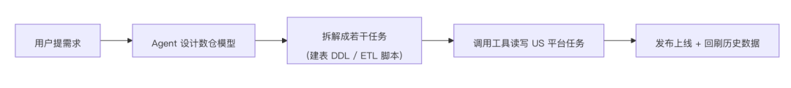
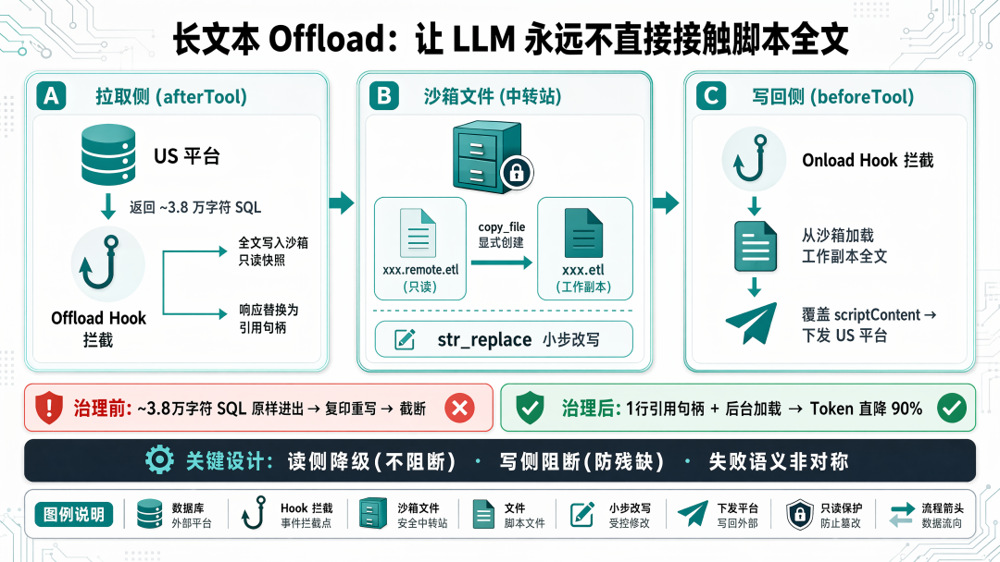
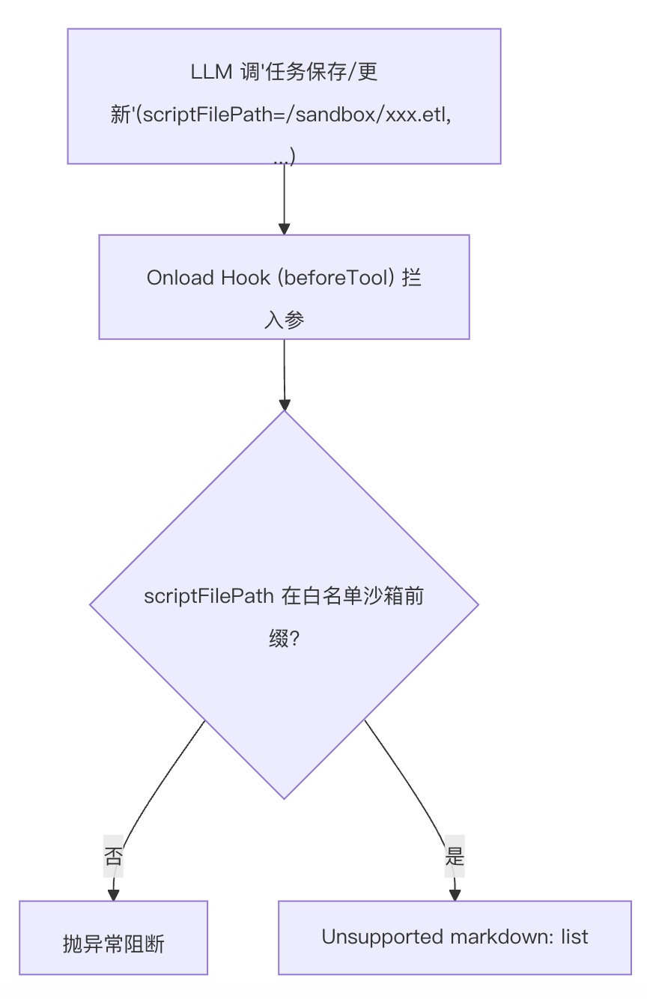
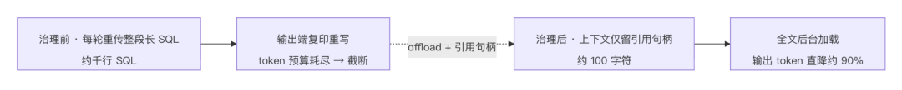
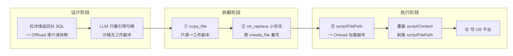
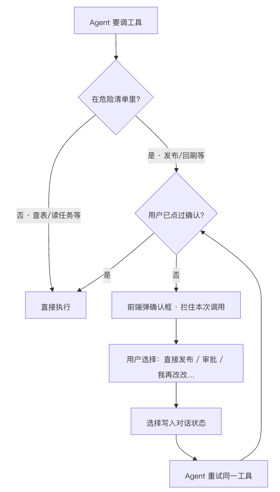
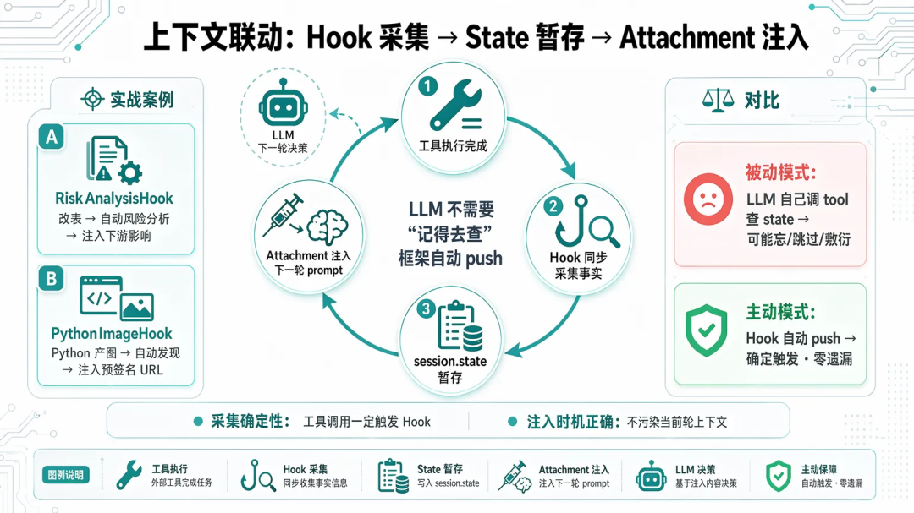
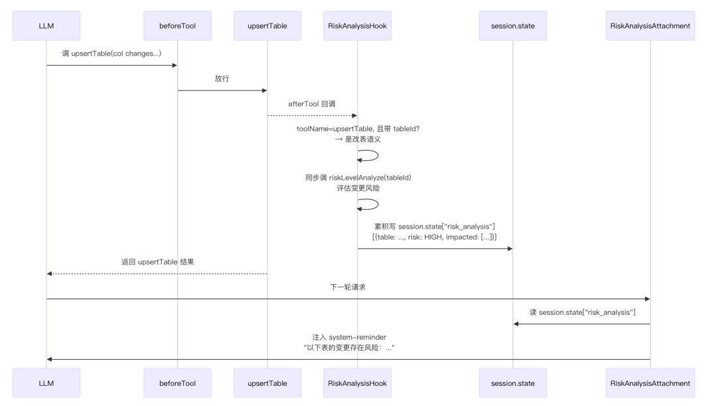
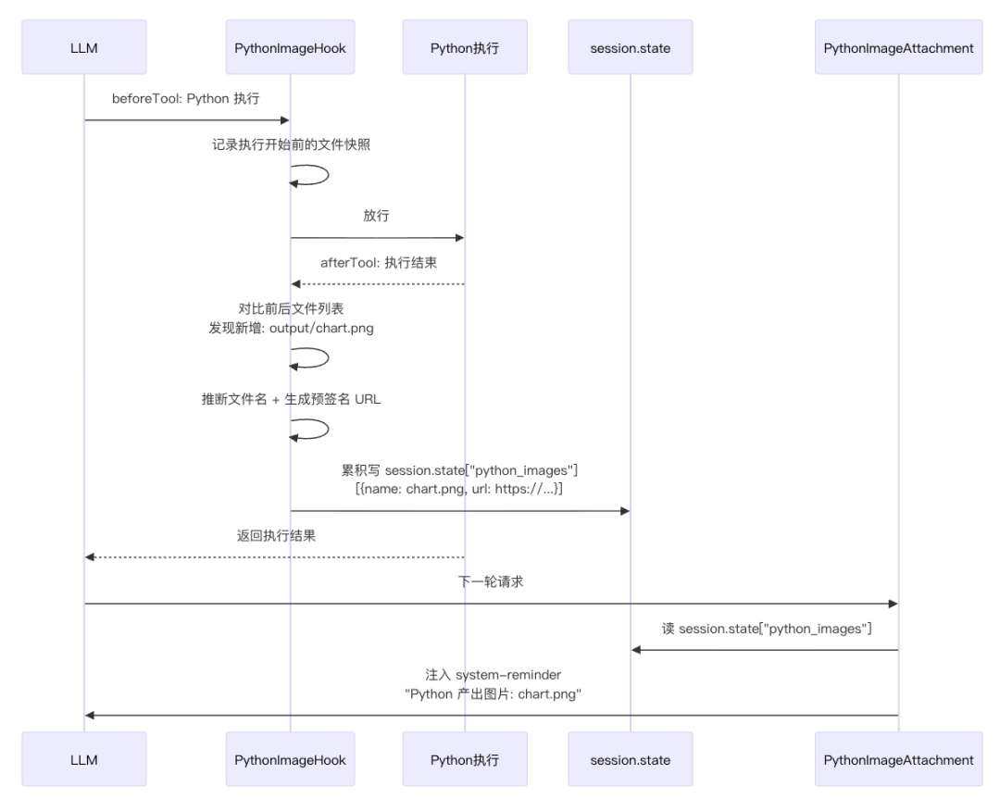
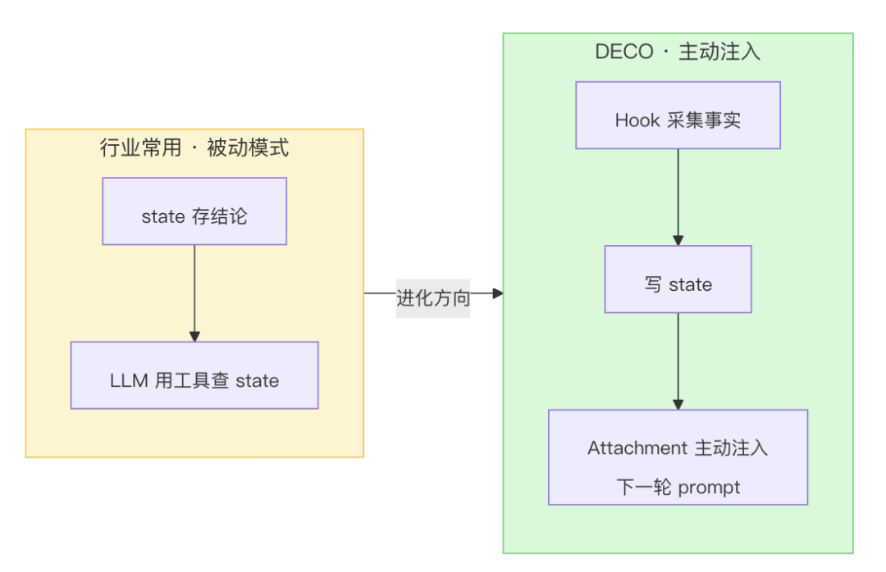

本文是 DECO（一个跑在生产上的数仓 Agent 引擎）实践系列之一，聚焦护栏层：怎么用 Agent 框架的 Hook 切面，把 LLM 处理长文本时的"偷懒"（截断、略写、残缺）、对生产环境的"越权"（未确认发布、回刷）以及上下文传递中的"失忆"（改了表不查风险、产出了物不知汇报），在代码层确定性兜底——prompt 管不住的，框架来堵。
DECO 作为腾讯一站式数据工程 Agent 智能协作平台，以业务数仓知识库为基础，致力于解决从需求到数据交付全过程，主要聚焦于数据问询、开发、同步、分析、运维五大环节。希望帮助更多同学更轻松地获取数据、理解数据、应用数据，助力数据平权。
案例一：用户让 Agent 改一张核心表的 ETL——1200 多行的长 SQL。Agent 读完原文、开始输出，写到一半"偷懒"了，中间跳过一大段逻辑写了句省略，然后若无其事地继续往下写。这份带省略号的脚本一旦提交上线，下游几十张表当天的数据就会算错。
案例二：Agent 还在"方案设计"阶段、用户都没点头，就径直调了发布工具，把一张还在讨论的表结构推上了生产。
这两个案例看似不相干，根因却是同一个——不是模型能力不够，而是它"图省事"或"自作主张"。具体有三种表现：
LLM 偷懒：处理长脚本（动辄上千行的 SQL / Python ETL）时，模型会截断、占位略写（输出 -- 其他字段...）、跳步骤、把长 SQL "复印"式重写到 token 耗尽，最后剩一堆残缺、不可执行的脚本。越权操作：发布、回刷、冻结/解冻、终止实例这些写生产或不可逆的动作，模型无法区分操作的可逆性——它把发布和查询视为同一类"完成任务的步骤"，可能不打招呼就直接调了。 上下文失忆：模型改完表不去分析下游风险、Python 产出图表不知告诉用户——「需要查的就不查」。模型被训练成用最短路径完成任务——额外一次 tool call 意味着多一步推理，模型倾向于跳过"看起来不必要"的检查步骤。（此处风险分析为事后下游影响评估，非改表前拦截——事前拦截由 HITL Guard 负责。）
"在 prompt 里多写几句 ⚠️ 禁止"根本管不住。 这不是 prompt engineering（通过提示词约束模型行为）能解决的问题——长 SQL 是物理上超出 token 预算，危险操作是模型无法区分"查询"和"发布"的可逆性差异，被动探测是模型追求最短完成路径的自然倾向。唯一的解法是在 Agent 框架层，让偷懒和越权的路径代码级强制走不通，让失忆的已知盲区确定性补齐。
本文拆解这套机制——Hook 链（Agent 框架的 Callback 切面）+ 挂在它上面的读写两侧 offload（长内容落盘、上下文仅留引用句柄）+ HITL 门禁 + 上下文联动闭环。
DECO 的数仓开发 Agent 帮用户把数据需求落成 US 平台上可运行的任务。先约定几个关键名词：

拦截这三类问题的切入口，是 Agent 框架普遍提供的Hook（或称 Callback）机制：框架在 Agent 运行的每个关键节点（围绕"模型调用"和"工具调用"，各有执行前 / 后）暴露出切面。我们把拦截逻辑挂载到这些切面上——到点框架自动回调，同一切面可挂多个、按序执行。一次会话沿这条流水线跑下来：
本文主要用到下面几个切面：
beforeTool） | ||
afterTool） | ||
设计原则：基础设施和推理逻辑解耦——Hook 切面上的逻辑独立运作，模型的 ReAct 循环不用感知；新增 / 删除一个 Hook，主流程一行代码都不用改。
本文逐层拆解三个最重要的应用：长文本完整性护栏（§三，揪"偷懒"）、危险操作确认 HITL（§四，封"越权"）、上下文联动闭环（§五，补"失忆"）。
3.1 长 SQL 在哪里被截断、略写
数仓任务开发会遇到两类长脚本，它们的偷懒形式不同：
修改场景：从 US 平台拉来的存量长 SQL，要在原脚本上局部改写后回写。风险集中在"拉取—改写"环节。 新建场景：LLM 新生成的目标态长 SQL，通过 US 平台"保存/更新任务"工具的 scriptContent入参提交。风险集中在"写回"环节。
无论哪种场景，长脚本都要经过拉取（US 平台 → LLM）和写回（LLM → US 平台）两段，每段都有各自高频的偷懒形式：
viewcreate_file（创建文件）重写 | |||
(SQL略)、-- 其他字段... | |||
scriptContent |
一句话定位：长产物的偷懒是结构性问题。解法是——把 LLM 必须接触的长内容降到最少、每次接触的窗口压到最小、所有写入路径都做成"小步增量改 + 强制校验"。
根治方案：让长 SQL 从 LLM 上下文里"消失"，全文走文件通道——这就是读写两侧 offload 要解决的问题。
3.2 框架层方案：读写两侧 offload + 引用句柄
做法：整体思路是——LLM 永远不直接接触脚本全文。 两端都用 Hook 拦截 + 沙箱文件做"中转站"：长内容全文留在沙箱，LLM 上下文里只有一句引用句柄，US 平台 ↔ 沙箱 ↔ LLM 三方各管一段，LLM 只用 str_replace 小步改写，最终通过文件路径入参把工作副本喂给回写工具。
下文为可读性将盘路径统称
/sandbox/，实际代码中只读快照在/mnt/chat-offload/，可编辑工作副本在/mnt/user-data/。

拉取侧：Offload Hook（afterTool）
Hook 拦截到含 scriptContent 的响应后，将全文写入沙箱只读快照，响应中替换为引用句柄。句柄明确告诉 LLM "要改先 copy_file（把只读快照复制为可编辑工作副本），再 str_replace"：
<offloaded to /sandbox/{taskName}.remote.etl (read-only snapshot, length=N chars).
To start editing, run copy_file(...) first, then str_replace.>
案例 · 同一个"拉取长 SQL"动作，治理前后 LLM 看到的东西（脱敏示意）：
# 治理前：约 3.8 万字符长 SQL 原样进上下文，复印重写到一半 token 耗尽
INSERT OVERWRITE TABLE dws_order_detail ...
SELECT ... FROM dwd_a UNION ALL
SELECT ... FROM dwd_b
-- 其他字段... ← 占位略写
（输出在此截断，下游 SQL 不完整）
# 治理后：上下文里只剩一句引用句柄，长 SQL 全文留在沙箱只读快照
<offloaded to /sandbox/order_detail.remote.etl (read-only snapshot, length=37814 chars).
To start editing, run copy_file(...) first, then str_replace.>
关键设计点：
响应形态适配：单条 Map 和数组都要支持；数组下每条 item 独立判定，任一落盘失败仅该条降级，避免"一条出错让整批 SQL 全进上下文"。 失败降级：落盘失败 → 该条返回原 scriptContent，让 LLM 至少拿到内容（承担自截断风险），不阻断主流程。
写回侧：Onload Hook（beforeTool）

同模式延展：表侧 Offload
上面详细拆解的是任务脚本的长文本护栏链路。同一套 Hook 链上，表侧也挂了完全对称的 Hook（面向宽表 200–500 列场景），心智模型与任务侧完全一致——读侧降级（落盘失败透传）、写侧阻断（文件不存在抛异常）。
工具协议：scriptContent 与 scriptFilePath 互补参数
回写工具同时声明两个参数，scriptFilePath 是纯框架契约：
scriptContent : 脚本内容。⚠️推荐改走scriptFilePath让框架Hook自动加载，
避免长SQL拼入参时自截断；仅沙箱不可用时才直接传。
scriptFilePath :脚本的沙箱路径（强烈推荐）。框架OnloadHook会从沙箱读全文覆盖
scriptContent，并在转发给本工具前剥离该字段；下游实现侧不消费它。
好处：下游无感知（协议不用改）、框架可独立演化（阈值/白名单/剥离规则升级都不影响下游）、防御性日志兜底（下游对 scriptFilePath 留 log.warn——到达本工具时它本应已被剥离，还在就是 Hook 失效信号）。
效果：修改任务时，模型不用再"吐"那几千行 SQL——它只输出脚本路径，全文由框架在后台对齐。「长文本走文件路径，修改任务的工具调用输出 token 直接降约 90%」的落地机制；长 SQL 从此彻底从对话历史和 token 消耗里"隐身"。

3.3 多重防线全景（对应数仓四阶段）
这套护栏不是单点，而是贯穿 Skills 编排篇那条流水线的多重防线：

每一阶段的防线，正好对应 Skills 编排篇里那条数仓开发流水线（设计→拆解→执行→验证四阶段）的各个阶段——Hook 在框架层做物理兜底。
图中隐含了两条关键分支，未直接绘出以保持主线清晰：
Onload 阻断（红线）：「⑤ → Onload Hook 加载工作副本」环节，若 scriptFilePath不在白名单路径、身份缺失、文件不存在或内容为空 → 抛异常阻断工具调用，不进入 C1 后续。Offload 降级（橙线）：「① Offload Hook 落只读快照」环节，若 COS 落盘失败 → 该条原 scriptContent透传给 LLM（承担自截断风险），不阻塞主流程。
3.4长文本护栏效果小结
把前面散落的数字汇成一张表（均为脱敏汇总）：
| 全量落盘 | ||
str_replace 小步改） | ||
afterTool） | 降级 | |
beforeTool） | 阻断 |
3.5 行业对比：哪些是现成的，哪些必须自研
和 HITL 不同——HITL 是单点拦截决策，各框架几乎都有一行配置或一个中间件搞定。长文本护栏是一个流水线问题（拉取 → offload → 编辑 → onload → 写回），没有哪个框架直接给一个开箱即用的完整闭环。但"offload + 引用句柄"这个模式本身，行业已有多种层级的实现：
注：DECO 使用 Java ADK，其 Hook API 与 Python ADK 同构但接口名略有差异；以下对比以 Python ADK 为例说明设计思路差异，具体接口以 Java ADK 文档为准。
ADKArtifactService | save_artifactload_artifact API + LoadArtifactsTool，官方有 context_offloading_with_artifact 示例（save→摘要→hook 注入→仅当前轮次可见） | load_artifact 再拼入参 | |
| LangGraph | SummarizationMiddleware 在 85% 容量时自动摘要压缩历史 | ||
| Anthropic Claude Code | Readoffset/limit 分页 | Editstr_replace，Pre-read requirement |
两个关键结论：
ADK 和 LangGraph 都有内置的 offload 能力——如果 DECO 只需要"读长 SQL 时把全文换成引用句柄"，用它俩的原生机制改造即可，不是从零发明。但这两者的 offload 都只做到读侧（工具结果 offload），没有写侧 onload——因为大部分 Agent 场景不需要把长产物再原样发回外部 API。
DECO 的数仓场景不同——有"写长 SQL"的保存工具，长产物要原样回写 US 平台。这意味着必须两端对称 offload，并且写回时需要额外加固：
| 写侧 onload | scriptContent、剥离 scriptFilePath |
scriptFilePath 框架协议 | |
| 只读快照 / 工作副本分离 | copy_file 才能开始编辑——这是 DECO 踩坑后的设计，不属于框架原生概念 |
| 注释块按字段名识别 + 剥离 | |
| 列级 offload | |
| 失败语义按代价差异化 |
4.1 通法：写操作不可逆，护栏要在框架层
prompt 是软约束，不是安全边界。任何"做了就回不去"的操作（发布、回刷、冻结/解冻、终止），都必须有一道代码级强制确认：没拿到用户明确授权，工具就是不能执行。这道闸必须在框架里。
HITL 本质是一个特殊的 beforeTool Hook：工具真正执行前，判断"是不是危险操作、用户授权了没"，没授权就阻断。它天然落在前面介绍的那套 Hook 体系里。
4.2 配置驱动的危险工具守卫
做法：危险工具守卫挂在 beforeTool 切面上，在 Hook 编排层统一调度。危险工具清单是配置出来的，每个配一个授权标记（requiredState key）和确认对话框：
deco:
dangerous-tools:
-name:packCommit
required-state:confirm_pack
hint:"需要用户先选择发布方式"
confirmation:
title:"请确认发布方式"
options:
-{id:direct,label:"直接发布（免审批）",value:direct}
-{id:approval,label:"提交审批",value:approval,hasInput:true,inputPlaceholder:"请输入审批人RTX",inputType:text}
-{id:draft,label:"保存草稿",value:draft}
-{id:edit_more,label:"我再改改",value:edit_more}
实际配置了多个危险工具，每个对应不同的授权标记：
confirm_pack（发布提交）、confirm_deploy（触发发布）、confirm_upsert_datasource（数据源变更）、confirm_transfer_task_upsert（同步任务变更）。同一套 Guard 机制统一管控。
守门流程——Agent 每次要调工具，框架都会先过一道「门卫」：

无论 Agent 是自作主张还是被诱导，只要没有人工确认这一步，packCommit / deployCommit 在框架层就物理走不通。§4.3 配图展开与用户握手的完整时序。
4.3 一次完整的确认过程：拦截 → 弹框 → 用户选择 → 放行
用户点选项后，前端经 REST API 把选择写进会话存储（session.state），再发起一次续跑请求（复用引擎篇的续跑入口）重新驱动同一会话——这一轮 LLM 重调该工具时 state 已就位，守卫放行。
确认框还支持带输入控件的选项（hasInput / inputPlaceholder / inputType），承载"填审批人""填回刷日期"这类带参确认——不只是 yes/no。
关键设计点：
必须框架层拦，不能信 LLM。 这套机制就是从框架层阻断 LLM 绕过 prompt 直接调 packCommit/deployCommit；确认动作只能由真实用户在前端触发。
4.4 行业 HITL 全景与自研必要性
DECO 的 HITL 是在 ADK 较早版本上自研的。如今 HITL 已是主流 Agent 框架的标配能力——开箱即用程度远超"从零实现"。先看行业全景：
ADKToolConfirmation | requestConfirmation() 可带结构化 payload | ||||
| LangGraph | interruptOn 配置 | interruptOn 映射 | |||
Claude CodePreToolUse | permissionDecision | settings.json | |||
DECODangerousToolGuard | application.yaml | COMMIT_PREVIEW |
其中 ADK 的 ToolConfirmation（1.0.0 起内置，当前最新 1.4.0）与 DECO 的深度对照：
DangerousToolGuard（自研） | ToolConfirmation | |
|---|---|---|
beforeTool | requestConfirmation()主动暂停 | |
| 配置驱动 | ||
requiredState key 标记"已授权" | ||
INTERACTION_BOX（富交互框、多选项、带输入） | FunctionResponse |
结论：如果只需要"调危险工具前问一声 yes/no"，直接用 ADK 原生 ToolConfirmation 即可——一行配置，框架替你处理暂停/恢复和防循环，这恰是自研最易出 bug 处。但 DECO 的场景要求更多：
发布前展示变更清单（ COMMIT_PREVIEW）——用户不是盲选 yes/no，而是先看改了什么；确认框带参数（选发布方式、填审批人、填回刷日期）——不是 yes/no，是结构化表单； 危险工具清单配置驱动——不同租户/环境危险工具不同，不能写死在工具代码里； 和 SSE 流式协议一体—— INTERACTION_BOX是CUSTOM事件的子类型，确认框和文件事件、阶段事件走同一条管道。
这四条，ADK 原生和 LangGraph 的 HITL 都不直接覆盖——它们的 HITL 是"工具级通用拦截"，DECO 要的是"业务级集成确认"。自研的必要性不在于"框架没有 HITL"，而在于"框架的 HITL 不够业务化"。
5.1 第三类问题：LLM 的「不作为健忘」
前两类——偷懒（长文本截断、略写）和越权（未确认发布、回刷）——都是 LLM「做了不该做的」或「该做好的没做好」。还有第三类更隐蔽：该做但没做的——
改了 DDL，字段重命名了——LLM 不会主动去分析下游哪些表会受影响（注：此处风险分析为事后下游影响评估，非改表前拦截——事前拦截由 HITL Guard 负责），因为它「觉得」改表是自己的事、风险分析是额外的事； Python 脚本跑完，产出物生成了一张图表——LLM 不会主动告诉用户图在哪，除非用户追问； 表结构变更了，字段元数据在上下文里已过时——LLM 不会主动回查刷新，继续用旧信息做决策。
这不是模型能力不够，而是「主动探测 = 额外一次 tool call = 多耗 token」。模型天然追求以最少 token 完成任务，不会主动给自己加检查步骤。
在行业坐标系中，这对应 ADK 官方 8 大 Hook 模式中的 #2 动态状态管理——「在回调中读写 state，使 Agent 行为可上下文感知，在步骤间传递数据」。DECO 进一步把它拓展成了一个闭环范式：Hook 采集事实 → 写 state → Attachment 注入下一轮 prompt。
5.2 范式：Hook 管「发生了什么」，Attachment 管「下一轮告诉模型什么」
这个范式的核心是把「副作用采集」和「上下文注入」解耦成两段，各管各的：

这样做的好处是双重的：
采集是确定性的：工具调用一定触发 Hook，Hook 一定做完检查——不靠 LLM「记得去查」； 注入是时机正确的：分析结果只在下一轮 prompt 里才需要，不污染当前轮的上下文、不增加当前轮的 token 消耗。
对比让 LLM 自己「记得去查」的方案：
| Hook 采集 → state → Attachment 注入 |
5.3 案例一：RiskAnalysisHook —— 改表后自动注入风险分析
场景：Agent 在 DDL 设计或执行阶段调 upsertTable 改了一张表的字段结构。
LLM 的认知盲区：它把「改表」当一次成功的工具调用完成了，不会想到还要接着查改动影响了谁——下游几十张 ETL 可能因为一个字段重命名而直接报错。（此处风险分析为事后下游影响评估，非改表前拦截——事前拦截由 HITL Guard 负责。）
治理做法：

判定「改表」语义：RiskAnalysisHook 挂在 afterTool 上，不从工具名硬判断——它看工具调用入参：带了 tableId 参数的 upsertTable 就是改表（新建表不带 tableId）。新建表语义直接跳过，不触发风险分析。
风险分析结果被 Attachment 注入后，LLM 在下一轮回复中自然输出类似提示：
⚠️ 风险提示：刚刚修改了 dws_order_detail 表的字段，检测到下游影响：
- dws_channel_report (HIGH) — 依赖字段 order_amount
- ads_daily_summary (MEDIUM) — 依赖字段 order_status
建议检查这两张表的 ETL 是否需要同步调整。关键设计点：
判定条件精确：带 tableId才是改表，避免新建表误触发风险分析；累积写入 state：一次会话多次改表，风险结论累积，下一轮一次性汇总注入。
5.4 案例二：PythonImageHook—— 自动发现并呈现生成产物
场景：Agent 调 Python 脚本做数据分析，脚本产出了一张可视化图表，但 LLM 的对话输出里没有图——用户必须自己去沙箱目录里翻。
LLM 的认知盲区：LLM 调 Python 工具时只知道脚本跑完了——它不知道脚本产出了什么新文件，自然不会主动告诉用户「生成了 chart.png」。等用户问「图呢」，LLM 要么已结束上下文，要么需再调一次工具查文件列表。
治理做法：

前端渲染：Attachment 注入的不只是文本——预签名 URL 被写成结构化 JSON，前端据此渲染内联图片。用户无需点按钮、不必翻沙箱目录，图直接出现在对话流里。
关键设计点：
前后文件快照对比： beforeTool加文件快照、afterTool对比，比让 LLM 用bash ls查文件可靠得多；只关心图片：仅关注 .png/.jpg/.svg等图片格式，不处理脚本和数据文件——避免 state 里塞无关文件列表；累积写入：一次 Python 执行可能产出多张图，全部累积写入，一次注入。
5.5 为什么 prompt 管不住「自己查」？
§3.1 和 §4.1 已论证 prompt 管不住「长文本截断」（物理约束）和「未授权操作」（模型输出不受限）。对「主动探测」类问题，前两条原因同样成立（模型追求效率、prompt 是软约束、上下文干扰），但还有一个独有原因：
信息不对称：LLM 不知道 Python 脚本产出了什么文件——它是「瞎子」，只能靠工具返回的 stdout/stderr 了解执行情况。如果返回里没提「生成了 chart.png」，LLM 就不可能知道。这不是"忘了查"，而是根本不知道有东西该查。
确定性兜底解法只有一个：不让 LLM「决定要不要查」，而是框架在工具执行后强制采集、结果自动注入下一轮 prompt。这正是 Hook → state → Attachment 闭环做的事。
5.6 行业对比：谁在解决「上下文断裂」？
「跨轮次状态传递」不是 DECO 独有问题，各框架都有解法，但切入角度不同：
ADKArtifactService | |
| LangGraph | |
| Claude Code | |
| CrewAI |
DECO 这套机制的特殊之处：它不是「存储 → 读取」的被动模式，而是「事件 → 采集 → 注入」的主动流水线。Hook 不是等着 LLM 来查 state，而是主动把结论 push 进下一轮 prompt——这意味着即使 LLM 完全不知道 state 里有风险分析结果，Attachment 也会让它「看到」。

一句话：Hook → state → Attachment 闭环，把「LLM 需要主动查」的操作降维为「框架主动 push」——LLM 不再是「需要查的就不查」，而是「不管想不想查都会被喂到嘴边」。
三、四两节纵深拆解了两个深度案例——长文本读写两侧 offload 和 HITL 门禁。但同一套 Hook 链（beforeModel/afterModel/beforeTool/afterTool/onRunEvent 等切面）上，DECO 实际挂了十余个 Hook，覆盖可观测、前端实时刷新、上下文联动、业务事件、沙箱环境等横切关注点。这一节从纵深拉回横展，展现 Hook 体系的完整生态。它们都遵循同一条原则：不改业务循环、不动工具实现，把横切逻辑挂在切面上。
| 长文本护栏 | TaskScriptOffloadServiceTaskScriptOnloadService | ||
TableColumnsOffloadServiceDdlColumnsOnloadService | |||
DdlBodyOffloadService | |||
| 危险操作护栏 | DangerousToolGuard | ||
| 工具返回处理 | LineageResponseOffloadService | ||
ToolResponseTruncator | |||
ToolResponseFormatter | |||
| 可观测 & 持久化 | ToolCallLogHook | toolName@threadId 配对） | |
LoggingHook | |||
ConversationPersistenceHook | |||
| 前端实时刷新 & 业务事件 | SqlExecuteHook | execute_sqlFILE_TREE_CHANGED | |
CopyFileHook | copy_file | ||
ReleaseItemCollectorHook | TASK_PLAN_CREATED/TASK_PLAN_UPDATE | ||
DocumentSaveHook | |||
| Hook→Attachment 联动 | RiskAnalysisHook | ||
PythonImageHook | |||
| 沙箱环境 | EnvVarCaptureHook | bash export 提取环境变量写入 .sandbox_env，重启后由 init.sh 恢复 |
6.1 行业参照：ADK 总结的 8 种 Hook 模式 + Claude Code 参照
看完 DECO 钩子体系的全貌，再回看这套机制的行业坐标系。ADK 官方总结了 8 种 Hook 设计模式，这也是行业主流 Agent 框架普遍采用的分类：
Maybe.just() 短路 | ||
这一篇讲的都是横切护栏：不改业务循环、不动工具实现，全靠挂在 Hook 切面上的护栏逻辑，把"prompt 管不住"的三类问题在框架层确定性地兜住——
长文本偷懒：读写两侧 offload + 引用句柄 + 强制 str_replace+ 失败语义非对称，让"复印长 SQL""提交残缺脚本"物理上不可能。越权操作：配置驱动的 beforeTool守卫 + 富交互确认框，让不可逆动作必须经真实用户授权。上下文失忆：Hook 采集 → state → Attachment 注入闭环，让「需要查的」自动 push 到 LLM 眼前，不靠它自觉。
它们服务于 Skills 编排篇那条数仓流水线的每个阶段，也和引擎篇的扩展点共用同一套 Hook 机制。
一句话总结就是：prompt 定意图，Skill 定规矩，框架 Hook 定边界——能用确定性兜底的，别交给模型。